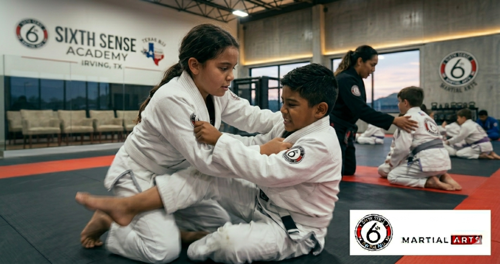
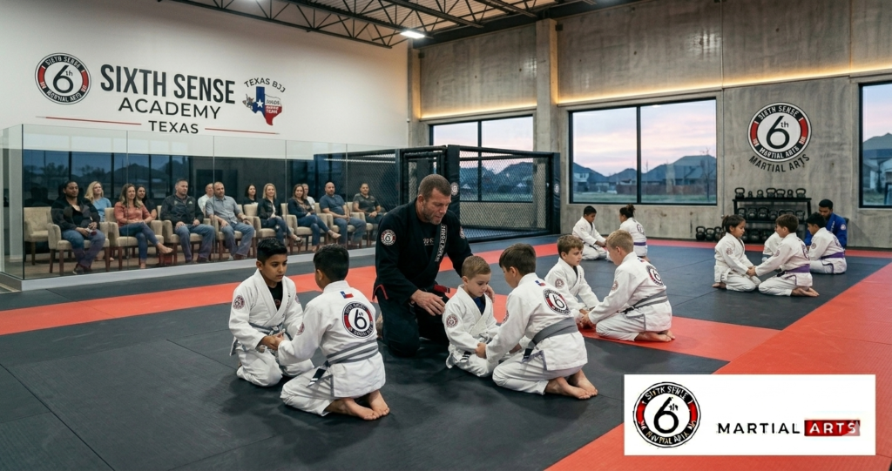
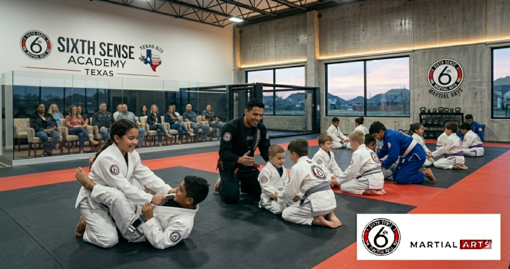

Why Sixth Sense Martial Arts Is the Top Kids Martial Arts Classes Irving TX

Most parents in Irving and Las Colinas searching for kids martial arts classes irving tx aren’t just looking for something to keep their kid busy after school. They’re looking for something that actually changes their kid. Builds the kind of discipline and confidence and self-defense awareness that doesn’t show up from soccer practice or a screen. And that search is harder than it sounds because the irving tx martial arts academy options vary enormously in what they actually deliver versus what they promise on a website.
Sixth Sense Martial Arts at 817 S MacArthur Blvd #100 in Coppell TX is a short drive from the Irving and Las Colinas corridor and it’s where kids and adults from this area have been building real skills on real mats with a real black belt coach for years. This is what the program looks like and why it’s worth the drive.
The Coach Behind the Kids Martial Arts Program at Sixth Sense
Coach Mattheus Galvao built this martial arts school around one straightforward belief. Every child who walks through the door deserves instruction that actually develops them and not just a curriculum that keeps them entertained until the next belt ceremony. His black belt lineage and years of teaching kids and adults at every experience level is what makes the program at Sixth Sense different from a standard academy in irving that runs classes divided by age but not by actual skill development.
The facility sits just outside Irving near the Valley Ranch corridor and it serves students of all ages from preschool through adult martial arts classes. Parents from Las Colinas and Irving and the surrounding areas have been choosing it specifically because the instruction is consistent and the structure is real and their kids are actually progressing in a way that shows up at home and at school.
What Irving TX Parents Are Actually Dealing With

When Discipline and Structure Aren’t Coming From Anywhere Else
Here’s the thing about kids without a structured path outside school. The gap gets filled by screens or by low-stakes activities that don’t ask them to persist through difficulty. Martial arts training fills that gap in a way that almost no other sport or after-school program does because it requires focus and hard work and resilience every single class. Not just when it’s fun.
Kids martial arts classes teach children to listen and to follow instruction and to try things they’re not immediately good at. That’s the foundation of discipline. And it’s built into how a real martial arts class runs from warmup to technique drill to cool down. The structure isn’t enforced through punishment. It’s built into the format and the kids internalize it faster than most parents expect.
Bullying and Low Confidence That Keeps Getting Worse
That’s the part most parents miss when they’re searching for self defense kids irving programs. The goal isn’t to train your child to fight. The goal is to build the kind of confidence that makes them a harder target in the first place. Kids who carry themselves with genuine capability and self-assurance tend to be left alone. And kids who know they can handle a physical situation tend not to panic when one threatens to develop.
Brazilian jiu-jitsu for children is particularly effective here because it teaches practical self-defense from a realistic perspective. Kids learn to escape grabs and control positions and manage physical conflict without relying on size or aggression. And that skill makes them feel genuinely capable in a way that a conversation about bullying never quite does.
Finding a Real Academy in Irving vs a Belt Factory
Plain and simple most kids karate irving tx searches will surface gyms that look similar from the outside. Belt systems and colored uniforms and group classes. But the difference between a premier martial arts school and a program that’s mostly about selling the next stripe is enormous and it’s not always visible until you’ve watched a few classes.
A real curriculum in children martial arts irving texas has structure that progresses skill rather than just attendance. Kids earn their stripe or their belt by demonstrating actual technique. The instructor knows each child’s name and their current development stage. The class size is manageable enough that every kid gets real correction and not just a group demonstration they may or may not have followed.
How Sixth Sense Martial Arts Answers Every Problem for Irving Families
BJJ for Children Irving — Practical Self-Defense Built Into Every Class
The kids bjj irving tx program at Sixth Sense teaches brazilian jiu-jitsu through a structured curriculum that progresses each child based on their actual skill development. Jiu-jitsu for kids here isn’t a modified version of adult class with shorter rounds. It’s built from the ground up for the way children learn movement and technique and for the specific self-defense situations kids actually face.
The mat time builds practical self-defense through partner drilling that teaches escape mechanics and positional control and the kind of physical confidence that comes from knowing how to grapple. Kids who train bjj consistently develop coordination and strengthen their whole body through mat work in a way that traditional taekwondo or karate classes rarely replicate at the same depth.
The Structure That Actually Changes Behavior at Home
What parents tend to notice first about kids mma irving texas and bjj programs that have real structure is the transfer. The child who couldn’t sit still in a restaurant for 20 minutes is suddenly listening attentively to instruction for an hour. The kid who gave up at the first sign of difficulty starts pushing through hard drilling rounds without complaint.
That’s the discipline and perseverance building in real time. The curriculum at Sixth Sense is designed so that kids are constantly working toward the next milestone whether it’s a technique they’re trying to nail or a stripe they’re working to earn. That structured path gives kids something concrete to succeed at and that sense of achievement compounds across months of consistent training.
Teen Martial Arts — A Different Challenge for Older Kids
Youth martial arts irving programs that lump teens in with younger kids miss something real. Teenagers need a different kind of challenge and a different kind of instruction than a 7-year-old does. The teen martial arts program at Sixth Sense runs at a higher technical intensity and connects to the adult martial arts classes in a way that gives teenagers a serious path toward black belt development rather than a modified version of the kids program.
Teens who train here are working with real technique and real sparring progression and a champion mindset built through hard work that actually means something to them. The resilience and confidence that build in a serious teen martial arts environment tend to show up in academics and in social dynamics in ways that parents consistently describe as genuinely surprising.
What the Kids Programs at Sixth Sense Actually Look Like
Age-Specific Curriculum From Preschool Through Teens
| Program | Ages | Skill Focus | Format | Key Benefit |
|---|---|---|---|---|
| Preschool BJJ | Ages 4-5 | Motor skills and foundation movement | Gi | Coordination and listening |
| Little Champions | Ages 4-7 | Fundamental bjj and build confidence | Gi | Discipline and self-esteem |
| Rising Champions | Ages 8-12 | Technique and practical self-defense | Gi | Real skill and resilience |
| Teen Martial Arts | Ages 13-17 | Advanced bjj and champion development | Gi and No-Gi | Mental toughness and best life skills |
| Kids and Adults | Family option | Shared martial arts training | Gi | Family commitment and community |
Kids Karate Irving TX vs BJJ for Children Irving — The Real Comparison
| Feature | Kids Karate Irving TX | Traditional Taekwondo Korean | BJJ for Children Irving |
|---|---|---|---|
| Real Self-Defense Application | Moderate | Moderate | High |
| Ground Defense Skills | Rarely | Rarely | Yes core curriculum |
| Sparring Culture | Sometimes | Sometimes | Yes controlled drilling |
| Belt Promotion Based On | Attendance and performance | Forms and patterns | Actual technique demonstrated |
| Improve Flexibility | Yes | Yes | Yes through mat work |
| Strengthen Full Body | Moderate | Moderate | High through grappling |
How to Prepare Your Child for Their First Martial Arts Class in Irving
Getting your child ready for their first class is simpler than most parents think.
- Tell them the goal is to learn and have fun and not to be the best person in the room on day one
- Explain that everyone in the class started at white belt at some point and that’s normal
- Pack comfortable athletic clothes and a water bottle and nothing else is required for the introductory class
- Arrive a few minutes early so your child can see the facility and the mat before the class starts
- Let the instructor run the class without stepping in from the side as the coaching staff is trained to handle first-class nerves
- Talk to your child after about one thing they learned rather than asking whether they liked it
How Irving TX Parents Enroll Their Child at Sixth Sense
Getting started is quick and there’s no long-term commitment required to try.
- Visit sixthsensemma.com or call 469-972-7800 to ask about the kids free trial
- Choose the right age group based on your child’s age and any previous martial arts experience
- Show up at 817 S MacArthur Blvd #100 Coppell TX 75019 at the scheduled time
- Meet Coach Mattheus and get a brief walkthrough of the kids program and facility
- Let your child attend the first class as a beginner with full instructor support and no performance pressure
- Talk to the coach afterward about your child’s specific goals and the program that fits best
What the Data Says About Kids Martial Arts Training
The outcomes from structured children martial arts irving texas programs are consistent across research. Kids in real martial arts training show a 40 percent reduction in bullying incidents compared to non-training peers. Six months of consistent training produces a 65 percent average increase in confidence measured across self-reported and parent-reported assessments. That’s not marketing language. That’s what shows up in the data.
For ADD and ADHD specifically the structured path of martial arts class has been documented to improve focus and attention in 78 percent of child participants. The combination of physical output and mental instruction and clear behavioral expectations addresses the underlying dysregulation in a way that passive activities don’t. Most parents of kids who’ve struggled with focus at school describe the change in attention after a few months of consistent training as one of the more significant shifts they’ve seen.
The physical side is equally real. Kids who train martial arts twice per week show measurable improvement in coordination and flexibility and cardiovascular fitness within 8 weeks. The workout quality of bjj for children irving and kids mma irving texas programs outperforms most youth sports in terms of full-body physical development because grappling and striking drills engage the whole body through every session.
Benefits of Kids Martial Arts Classes at Sixth Sense for Irving Families

The life skills side of training here tends to show up faster than the physical side. Discipline comes first because every class demands it. Then the build confidence piece follows as kids start to succeed at techniques they found hard in week one. Then the self-defense awareness develops as the practical foundation of the curriculum settles into real movement patterns.
The physical benefits run alongside all of that. Kids strengthen their core and improve flexibility and develop coordination through mat drilling that feels like play but is actually building athletic capacity faster than most youth sports do at this age. And the resilience piece that comes from learning to fail at a technique and try it again without giving up is something that parents describe as the most transferable skill their kids bring home from the mat.
The champion mindset that the curriculum at Sixth Sense builds across the kids program isn’t about winning competitions. It’s about perseverance and hard work and learning to earn something through consistent effort. That’s what makes kids succeed in school and in relationships and eventually in their careers. And it starts with learning to grapple on a mat in Coppell TX with a black belt coach who knows their name.
Common Mistakes Irving TX Parents Make When Choosing Kids Martial Arts
Choosing kids karate irving tx or traditional taekwondo or any other program based on how close it is to home without watching a class first is the most common one. Proximity doesn’t make instruction good. And the difference between a curriculum that builds real skill and one that just sells belt stripes is obvious once you’ve watched a class with that lens.
Pulling a child out after the first hard class because they said they didn’t want to go back is something a lot of parents do and later regret. The first two weeks of learning martial arts in any form involve unfamiliar movement and some frustration and the normal discomfort of not being immediately good at something new. That’s exactly when the discipline and resilience are starting to build. Leaving before week four is leaving before the interesting part.
And choosing a large group class at a big facility because it seems like a lot of value for the price tends to backfire because the child never gets enough individual attention to really improve. The introductory experience might feel positive but three months in the instruction feels generic and the child’s progress stalls. Smaller classes with a coach who knows each child’s specific technique gaps develop kids faster and keep them engaged longer.
Why Sixth Sense Is the Premier Martial Arts School for Kids Near Irving TX
The age-specific curriculum that runs from preschool through teen martial arts at Sixth Sense means every child is in a class designed specifically for their developmental stage and skill sets. They’re not just divided by age. They’re taught through a structured path that progresses them based on what they can actually demonstrate on the mat.
Coach Mattheus knows every child’s name and their current technical development and what they’re working toward. That level of personalized attention in a supportive environment is what makes the instruction here different from a larger academy in irving where a kid might go weeks without a personal correction.
The facility is a short drive from Irving and Las Colinas and the kids and adults programs run at the same location so the whole family can train. That’s something that matters practically for parents who want to make one trip and get training time for themselves alongside their child’s class.
For kids who need martial arts after school irving options the schedule at Sixth Sense is built to accommodate that. And the free trial means there’s no financial commitment required before your child steps on the mat and sees whether it clicks.
You can see the full breakdown on the Kids BJJ Classes page and the Teen BJJ Classes page. The Anti-Bullying Martial Arts for Kids blog goes deeper on the confidence and self-defense connection specifically. And the Family Martial Arts Classes page covers how kids and adults train together at Sixth Sense.
What Irving and Las Colinas Parents Say About Sixth Sense
A dad from Irving tried kids karate irving tx at two different locations before coming to Sixth Sense. He said the difference was obvious in the first class. The instructor corrected his son’s posture three times in 45 minutes. At the previous academy his son had trained for four months without a single personal correction. His son has since handled a bullying situation at school with calm confidence and the dad describes it as the biggest parenting win he’s had in years.
A mom from Las Colinas enrolled her daughter in the preschool program at age 5 after reading about jiu-jitsu for kids on the Sixth Sense website. She said she expected her daughter to quit within a month because she’d quit two other activities already. Her daughter is now 7 and has earned three stripes and asks to go to class on off days. The mom says the structured path and the coach knowing her daughter personally made all the difference.
A parent of a 14-year-old from the Irving corridor came in specifically because their teen had outgrown traditional taekwondo and was bored with the korean forms-based curriculum. The teen martial arts program at Sixth Sense re-engaged him within the first week. He’s now training three times per week and is preparing for his first competition. His grades went up in the same semester.
Irving TX Kids Deserve Martial Arts That Actually Builds Something Real
If you’ve been searching for kids martial arts classes irving tx and wondering whether any of the options you’re finding will actually make a difference for your child then the free trial at Sixth Sense is where that question gets answered. Not by a brochure. By showing up and watching your child on the mat with a coach who actually knows what they’re doing.
The children martial arts irving texas program here has built discipline and confidence and practical self-defense skills in kids from Irving and Las Colinas and the surrounding corridor for years. The structured path gives every child something real to succeed at. The instructor builds relationships that make kids want to come back. And the results show up at home and at school in ways that parents consistently describe as worth every drive.
Call: (469) 972-7800 Email: info@sixthsensemma.com Visit: 817 S MacArthur Blvd #100 Coppell TX 75019 Free Trial: Claim Your Spot
Explore More:
- Kids BJJ Classes
- Teen BJJ Classes
- Anti-Bullying Martial Arts for Kids
- Family Martial Arts Classes
- Kids Self-Defense Classes Near Me
- MMA Classes for Kids
- Martial Arts for Kids
Follow Sixth Sense on Instagram: https://www.instagram.com/sixthsensemma
FAQ’s
The preschool program at Sixth Sense starts at age 4. At that age the focus is on fundamental movement and coordination and learning to follow instruction in a structured environment. The program is specifically designed for that developmental stage and not a scaled-down version of the older kids curriculum.
Both have real value but they develop different skills. Traditional taekwondo builds discipline and striking technique through a korean forms-based curriculum. BJJ for children irving builds practical self-defense grappling skills and the ability to control a physical situation on the ground. For real-world self-defense effectiveness bjj tends to be more directly applicable to situations kids actually face.
Two ways. First by building the practical self-defense skills that make kids physically capable of handling a confrontation. Second by building the confidence and posture and awareness that make kids less likely to be targeted in the first place. Kids who carry genuine capability tend not to look like easy targets. That shift in how they carry themselves is often noticed by parents before the kids mention it themselves.
Yes when the program is structured appropriately for the age group. At Sixth Sense the kids mma irving texas training is age-appropriate and technique-focused with controlled drilling and no inappropriate contact for younger students. The instructor matches training partners by size and experience level and live sparring is introduced gradually as the child’s technique and emotional readiness develop.
Kids karate irving tx tends to focus on striking techniques and traditional forms and a structured belt curriculum. BJJ for children irving focuses on grappling and ground control and practical self-defense from positions kids actually end up in. BJJ also tends to have a more active live drilling culture where children practice their techniques against a resisting partner rather than just performing them in the air.
Yes. The class schedule at Sixth Sense is built to accommodate working parents and includes afternoon and evening options that serve as a practical martial arts after school irving solution. The coaching staff can help you find times that work with your family’s schedule.
Belt progression at Sixth Sense is based on skill demonstrated on the mat rather than time served. Most children earn their first stripe within the first few months of consistent training. The full belt progression from white toward black belt is a multi-year journey and that’s by design because the skills at each level are genuinely earned rather than given.
Yes and the research on this is consistent. The structured environment and physical output and clear behavioral expectations of a real martial arts class address many of the underlying challenges of ADD and ADHD in practical ways. Kids who struggle to focus in a classroom often find that the movement-based instruction of bjj or kids mma irving texas keeps them engaged in a way that seated learning doesn’t.
That’s completely up to you. Parents are welcome to observe from the side and many do especially in the early weeks. But parents who need to step out during class are also welcome to do that. The instructor manages the class and the children completely and the supportive environment means your child will be well taken care of regardless.
Yes. The preschool program runs for ages 4 and 5 and focuses on foundational motor skills and coordination and learning to follow structured instruction in a fun and age-appropriate setting. It’s designed specifically for this age group and not a modified version of the older kids curriculum.
Yes. Kids bjj irving tx and teen martial arts and adult martial arts classes all run at the same facility. Families who want to train together have that option and families who want to train at different times can do that too. The scheduling is built to serve both approaches.
Yes. The introductory free trial is available for new students with no credit card required and no long-term commitment. Go to the landing page to claim your child’s spot.
Call 469-972-7800 or visit sixthsensemma.com and fill out the short form. Show up at 817 S MacArthur Blvd #100 Coppell TX 75019 and meet the coaching staff. The first class takes care of the rest.
Train with us in Coppell
The first class is free. Shorts, a t-shirt and a water bottle. We lend the rest.
Book a free class